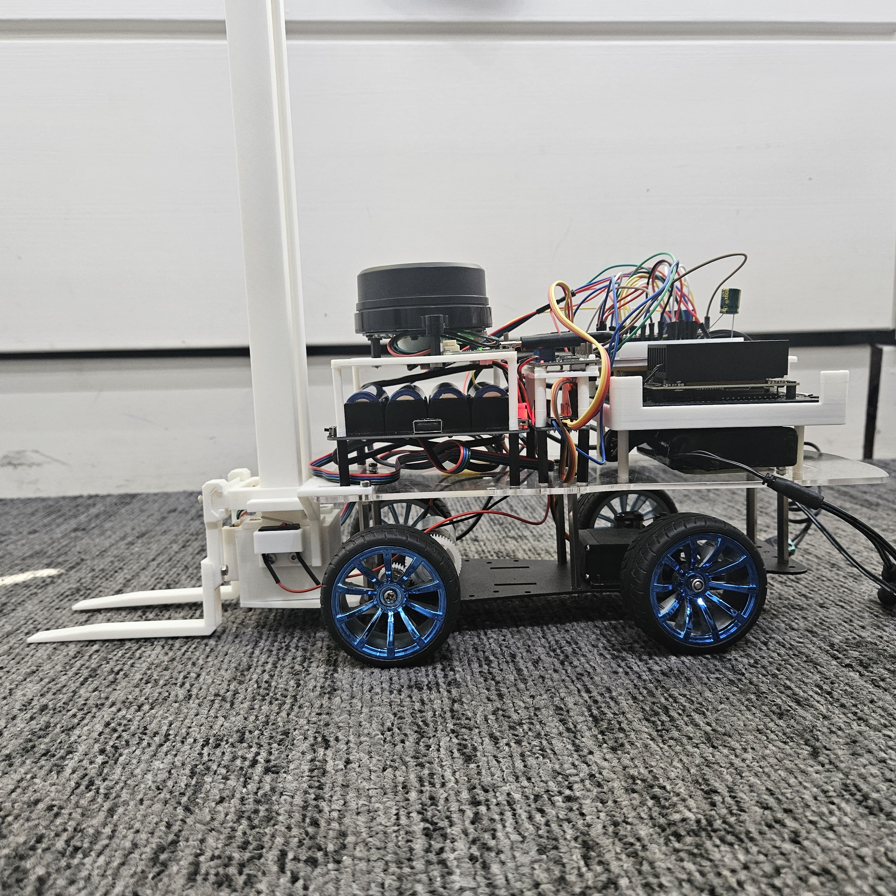
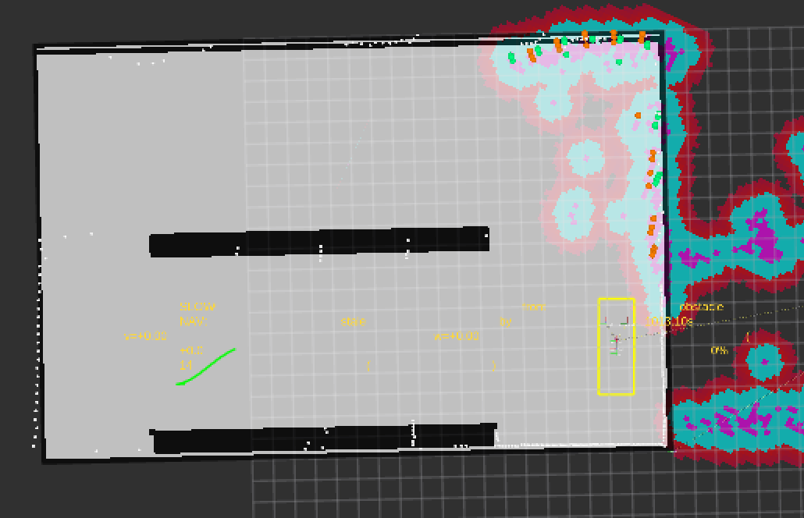
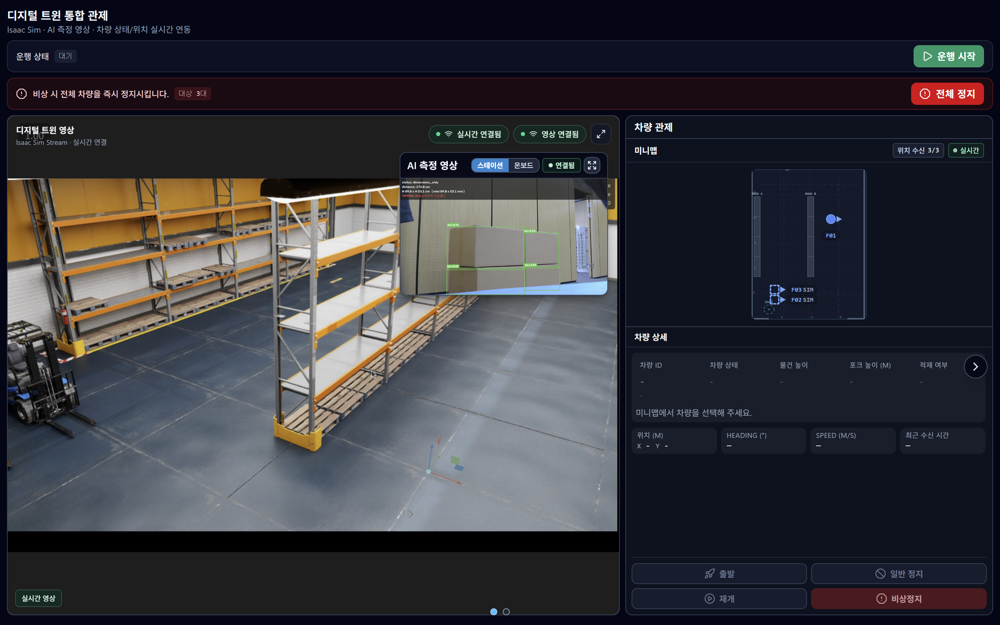
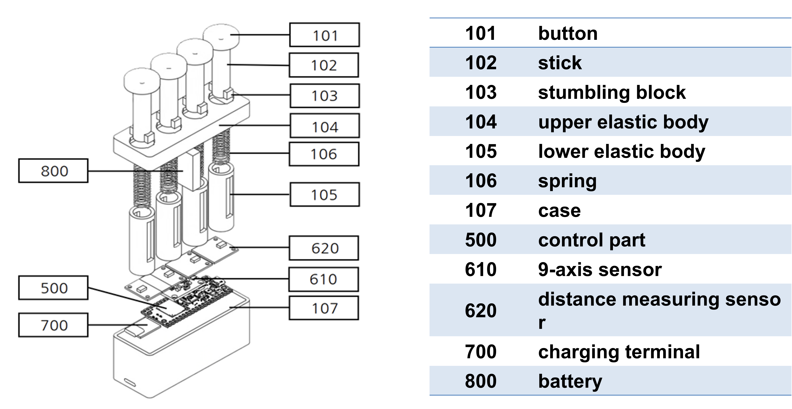
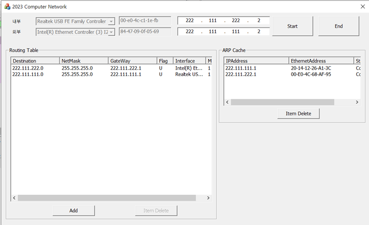
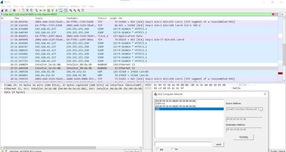
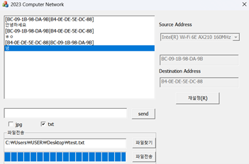
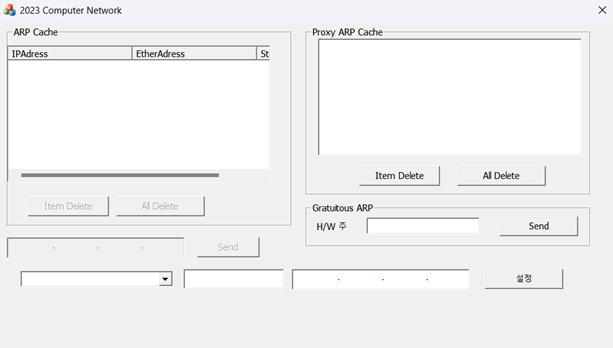
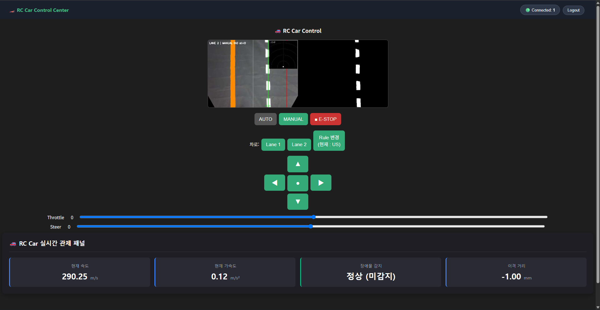

Projects
F.A.S.T.
2026.07 – 08 · 6인 팀 · SSAFY 우수상
1/10 스케일 무인 지게차. 2×3m 환경에서 자율주행 후 파렛트에 포크를 정밀 적재하는 디지털 트윈 물류 시스템.
자율주행 파트 리더 — 센서 융합 · SLAM · Nav2 · 통신 설계 · 포크 기구
ROS2 Humble · Nav2 · slam_toolbox · C++ · Python · Jetson Orin Nano · ESP32-S3 · UART · MQTT


RViz — SLAM 맵 + costmap 레이어 + Nav2 경로

디지털 트윈 통합 관제 화면 (Isaac Sim 연동)
37% → 4%
모터 속도 오차
(적분 전용 폐루프 제어)
109 → 4
/dev/shm 세그먼트
(UDPv4 루프백 전환)
내가 한 것
- uart_teleop_bridge / sensor_bridge 노드 구축 — ESP32에서 수신되는 바이트 스트림을 CRC-16으로 검증하고, 정상 패킷을 /imu/data, /wheel/twist 토픽으로 파싱·발행
- 적분(I) 전용 폐루프 속도 제어기 — 저속 구간에서 정지마찰을 못 넘는 P 제어 한계 확인 후, I 단독으로 전환. 듀티 축적이 마찰력을 자율 돌파하도록 설계
- EKF 센서 융합 — LiDAR, ToF, IMU, 엔코더 4종의 공분산 가중치를 실험적으로 조정
- Nav2 Behavior Tree + costmap 9단계 튜닝 — 동적 장애물 잔상 문제를 voxel layer 수집 주기 조정으로 해결
- Maximum 병합 기반 센서 레이어 분리 — ToF clearing이 LiDAR 장애물을 덮어쓰는 문제를 costmap 결합 수식 분석 후 레이어 격리
- forklift_teleop 패키지 — 20개 노드/모듈 + 12개 테스트 파일 직접 작성
트러블슈팅 — DDS 통신 단절 원인 추적
데모 3일 전, 액션 응답 유실 + TF 끊김이 간헐 발생. "보드 재부팅"이라는 임시 대응을 거부하고 원인을 추적:
- 상위 노드 로그 → 토픽 구독 자체가 누락되는 것 확인
- /dev/shm 확인 → 비정상 종료 후 세마포어 파일 잔여 발견
- 정상 종료 vs 강제 종료 비교 → 강제 종료 시 잠금 파일 미해제 확인
- 찌꺼기 수동 삭제 → 일시 복구되나 재발. 대증요법 한계
- 단일 보드 내 통신 비중 분석 → 공유메모리가 불필요한 구간이 대부분
- fastdds_no_shm.xml 프로파일 작성, UDPv4 로컬 루프백 전환
- 결과: /dev/shm 세그먼트 109 → 4, 통신 오류 0%
Power Up — 재활 악력 컨트롤러
2024 · 4인 팀 · CEDC 국제 경진대회 은상
편마비 환자가 스프링 버튼을 눌러 악력을 훈련하고, 손목 기울기로 조작하는 악력기형 IoT 게임 컨트롤러. Unity 재활 미니게임과 BLE 실시간 연동.
임베디드 펌웨어 — 하드웨어 전체 + BLE
MicroPython · Raspberry Pi Pico W · I2C · VL6180X ×4 (ToF) · MPU9250 (9축 IMU) · BLE

0x29 → 개별
I2C 주소 충돌 해결
(GPIO 순차 전원 + 레지스터 재할당)
23 → 150 B
BLE MTU 확장
(패킷 유실률 0%)
100-sample
지자기 캘리브레이션
(하드/소프트 아이언 보정)
내가 한 것
- I2C 주소 충돌 우회 — VL6180X 4개가 동일 주소 0x29. 물리 점퍼 공간 없어서 GPIO 순차 전원 인가 후 레지스터에서 주소를 런타임 재할당
- BLE MTU 확장 — JSON 센서 데이터가 23바이트 기본 MTU에서 잘림. ble_simple_peripheral.py 내부에서 self._ble.config(mtu=150) 협상으로 해결
- 지자기 캘리브레이션 — 사무실 철제 프레임의 하드/소프트 아이언 왜곡으로 방위각이 엉망. 부팅 시 100회 샘플로 자기장 구 중심 바이어스를 영점 보정
네트워크 프로토콜 스택 & 소프트웨어 라우터
2023 · 개인 · 컴퓨터네트워크 A+
컴퓨터네트워크 수업에서 C++ MFC로 Ethernet·IP·ARP 계층을 구현하고, 실제 패킷을 라우팅하는 채팅 프로그램 제작.
1인 전체 설계 및 구현
C++ · MFC Framework · WinPcap/Npcap API · Multithreading

Static Routing Table + ARP Cache (실제 NIC 바인딩)

Wireshark 송신 캡처 — Npcap으로 실제 이더넷 프레임 전송

프로토콜 스택 위에 구축한 채팅 + 파일 전송

ARP Cache / Proxy ARP / Gratuitous ARP 구현
내가 한 것
- CBaseLayer 추상 인터페이스 — 모든 계층이 상속. 한 계층을 수정해도 인접 계층이 깨지지 않는 디커플링
- CLayerManager — 문자열 파싱으로 계층 인스턴스를 탐색·배선. 텍스트 설정만으로 스택 구조 변경 가능
- Npcap 비동기 수신 — 소켓 수신 무한 루프가 MFC UI를 먹통으로 만드는 문제. CWinThread 분리 + PostMessage 이벤트 핸들링으로 해결
- ARP Cache + Routing Table — 동적 캐시 생성/만료/삭제, Proxy ARP, Gratuitous ARP 구현
RC카 자율주행 라인 트레이싱
2023 · 개인 · 학부 임베디드 융합 제어
카메라 차선 인식 + 1D LiDAR/초음파 장애물 감지 + PID 속도 제어로 라인을 따라 자율주행하는 RC카. MQTT 텔레메트리 실시간 관제.
1인 전체 설계 및 구현
Python · C++ · Arduino · OpenCV (허프 변환) · PID Control · MQTT · Raspberry Pi · PCA9685

내가 한 것
- 웹 관제 UI — 카메라 실시간 피드 + AUTO/MANUAL/E-STOP 모드 전환 + Throttle·Steer 슬라이더 + 속도/가속도/장애물/이격거리 대시보드
- OpenCV 차선 검출 파이프라인 — 소벨 필터 + 허프 변환으로 차선 이탈량 도출. 30Hz 실시간 처리
- PID 조향·감속 제어 — 급커브에서 원심력 탈선 방지. 조향각 편차의 I/D 값을 모터 속도에 피드백하여 능동 감속
- 센서 스레드 격리 — LiDAR/IMU 시리얼 폴링을 백그라운드 데몬 스레드로 분리. Lock 동기화로 비전 루프 지연 방지
- MQTT 텔레메트리 — 속도/LiDAR 거리/배터리/에러 상태를 JSON으로 초당 15회 실시간 전송
- 장애물 우회 — LiDAR 전방 30cm 이내 감지 시 차선 변경 또는 급제동 안전 로직